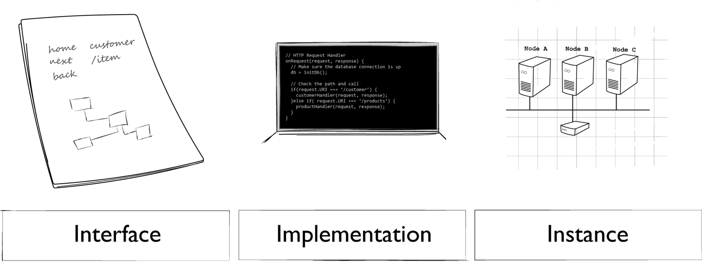

Chapter 1 The Challenge of API Management
Management is, above all, a practice where art, science, and craft meet
Henry Mintzberg
A survey from Coleman Parkes released in 2017 shows that almost 9 in 10 global enterprises have some form of API program. This same survey shows that these companies are seeing a wide variety of benefits from their API programs, including an average increase in speed-to-market of around 18%. However, only about 50% of these same companies say they have an advanced API management program. This points to a key gap in many enterprise-level API programs: the distance between the operational APIs that represent key contributions to revenue and the management skills and infrastructure needed to support these revenue-producing APIs. It is this gap that this book hopes to address.
The good news is there are many companies out there successfully managing their API programs. The not-so-good news is that their experience and expertise is not easily shared or commonly available. There are several reasons for this. Most of the time, organizations that are doing well in their API management programs are simply too busy to share their experiences with others. In a few cases, we’ve talked to companies that are very careful about how much of their API management expertise they share with the outside world; they are convinced API skills are a competitive advantage and are slow to make their findings public. Finally, even when companies share their experience at public conferences and through articles and blog posts, the information they share is usually company-specific and difficult to translate to a wide range of organizations’ API programs.
This book is an attempt to tackle that last problem—translating company-specific examples into shared experience all organizations can use. To that end, we have visited with dozens of companies, interviewed many API technologists, and tried to find the common threads between the examples companies have shared with us and with the public. There are a small handful of themes that run through this book that we’ll share here in this introductory chapter.
A key challenge to identify right up front is sorting out just what people mean when they talk about APIs. First, the term “API” can be applied to just the interface (e.g., an HTTP request URL and JSON response). It can also refer to the code and deployment elements needed to place an accessible service into production (e.g., the customerOnBoarding API). Finally, we sometimes use “API” to refer to a single instance of a running API (e.g., the customerOnBoarding API running in the AWS cloud vs. the customerOnBoarding API running on the Azure cloud).
Another important challenge in managing APIs is the difference between the work of designing, building, and releasing a single API and supporting and managing many APIs—what we call an API landscape. We will spend a good deal of time in this book on both ends of this spectrum. Concepts like API-as-a-Product (AaaP) and the skills needed to create and maintain APIs (what we call API pillars) are examples of dealing with the challenges of a single API. We will also talk about the role of API maturity models and the work of dealing with change over time as important aspects of managing an API.
The other end of that spectrum is the work of managing the API landscape. Your landscape is the collection of APIs from all business domains, running on all platforms, managed by all the API teams in your company. There are several aspects to this landscape challenges, including how scale and scope change the way APIs are designed and implemented as well as how large ecosystems can introduce added volatility and vulnerability just because of their size.
Finally, we touch on the process of decision making when managing your API ecosystem. In our experience this is the key to creating a successful governance plan for your API programs. It turns out the way you make decisions needs to change along with your landscape; holding on to old governance models can limit your API program’s success and even introduce more risk into your existing APIs.
Before we dive into the details on how you can learn to deal with both challenges—your individual APIs and your API landscape—let’s take a look at two important questions: what is API management, and why is it so hard?
What Is API Management? As mentioned, API management involves more than just governing the design, implementation, and release of APIs. It also includes the management of an API ecosystem, the distribution of decisions within your organization, and even the process of migrating existing APIs into your growing API landscape. In this section, we’ll spend time on each of these concepts—but first, a short explanation of what we mean by “API.”
What Is an API? Sometimes when people use the term “API” they are talking about not only the interface, but also the functionality—the code behind the interface. For example, someone might say, “We need to release the updated Customer API soon so that other teams can start using the new search functionality we implemented.” Other times, people may use the term to refer only to the details of the interface itself. For example, someone on your team might say, “What I’d like to do is design a new JSON API for the existing SOAP services that support our customer onboarding workflow.” Both are correct, of course—and it seems pretty clear what is meant in both cases—but it can be confusing at times.
To try to clear up the distinction and make it easier for us to talk about both the interface and the functionality, we are going to introduce some additional terms: interface, implementation, and instance.
INTERFACE, IMPLEMENTATION, AND INSTANCE The acronym API stands for application programming interface. We use interfaces to gain access to something running “behind” the API. For example, you may have an API that exposes tasks for managing user accounts. This interface might allow developers to:
Onboard a new account.
Edit an existing account profile.
Change the status of (suspend or activate) an account.
This interface is usually expressed using shared protocols such as HTTP, Thrift, TCP/IP, etc. and relies on standardized formats like JSON, XML, or HTML.
But that’s just the interface. Something else actually needs to perform the requested tasks. That something else is what we’ll be referring to as the Implementation. The implementation is the part that provides the actual functionality. Often this implementation is written in a programming language such as Java, C#, Ruby, or Python. Continuing with the example of the user account, a UserManagement implementation could contain the ability to create, add, edit, and remove users. This functionality could then be exposed using the interface mentioned previously.
DECOUPLING THE INTERFACE FROM THE IMPLEMENTATION Note that the functionality of the implementation described is a simple set of actions using the Create, Read, Update, Delete (CRUD) pattern, but the interface we described has three actions (OnboardAccount, EditAccount, and ChangeAccountStatus). This seeming “mismatch” between the implementation and the interface is common and can be powerful; it decouples the exact implementation of each service from the interface used to access that service, making it easier to change over time without disruption.
The third term in our list is instance. An API instance is a combination of the interface and the implementation. This is a handy way to talk about the actual running API that has been released into production. We manage instances using metrics to make sure they are healthy. We register and document instances in order to make it easy for developers to find and use the API to solve real-world problems. And we secure the instance to make sure that only authorized users are able to execute the actions and read/write the data needed to make those actions possible.
Figure 1-1 clarifies the relationship between the three elements. Often in this book, when we write “API” we’re talking about the instance of the API: a fully operational combination of interface and implementation. In cases where we want to highlight just the interface or only the implementation, we’ll call that out in the text.

The good news about these practice areas is that they transcend any single API. For example, the skill of documenting APIs well is transferable from one API team to the next. The same goes for learning proper testing skills, security patterns, and so forth. That also means that even when you have separate teams for each API domain (sales team, product team, backoffice team, etc.), you also have “cross-cutting” interests that bind people within teams to other people in other teams.1 And this is another important aspect of managing APIs—enabling and engineering the teams that build them. We talk more about how this works in different organizations in Chapter 7.
API Maturity Stages Knowing and understanding the API pillars is not the entire picture, either. Each API in your program goes through its own “lifecycle”—a series of predictable and useful stages. Knowing where you are in the API journey can help you determine how much time and resources to invest in the API at the moment. Understanding how APIs mature allows you to recognize the same stages for a wide range of APIs and helps you prepare for and respond to the varying requirements of time and energy at each stage.
On the surface, it makes sense to consider that all of the API pillars need to be dealt with when designing, building, and releasing your APIs. But reality is different. Often, for early-stage APIs it is most important to focus on the design and build aspects and reduce efforts on documentation, for example. At other stages (e.g., once a prototype is in the hands of beta testers), spending more time on monitoring the use of the API and securing it against misuse is more important. Understanding maturity stages will help you determine how to allocate limited resources for maximum effect. We’ll walk you through this process in Chapter 6.
More Than a Single API As many readers may already know, things change when you start managing a lot of APIs. We have customers with thousands of APIs that they need to build, monitor, and manage over time. In this situation, you focus less on the details of how a single API is implemented and more on the details of how these APIs coexist in an ever-growing, dynamic ecosystem. As mentioned earlier, we call this ecosystem the API landscape, and we devote several chapters to this concept in the second half of the book.
Much of the challenge here is how to assure some level of consistency without causing bottlenecks and slowdowns due to centralized management and review of all the API details. This is usually accomplished by extending responsibility for those details to the individual API teams and focusing central management/governance efforts on normalizing the way APIs interact with each other, ensuring that there is a core set of shared services or infrastructure (security, monitoring, etc.) in place and available for all API teams, and generally providing guidance and coaching to more autonomous teams. That is, it’s often necessary to move away from the usual centralized command-and-control model.
One of the challenges when working toward distributing decision making and autonomy deeper in the organization is that it can be easy for those higher up in the organization to lose visibility into important activities happening at the team level. Whereas in the past a team might have had to ask permission to take an action, companies that extend additional autonomy to the individual teams will encourage them to act without waiting for upper-level review and permission.
Most of the challenges of managing a landscape of APIs have to do with scale and scope. It turns out that as your API program grows, it doesn’t just get bigger; it also changes in shape. We’ll discuss this in more detail later in this chapter (see “Why Is API Management Difficult?”).
The Business of APIs Beyond the details of creating APIs and managing them in a landscape, it is important to keep in mind that all this work is meant to support business goals and objectives. APIs are more than the technical details of JSON or XML, synchronous or asynchronous, etc. They are a way to connect business units together, to expose important functionality and knowledge in a way that helps the company be effective. APIs are often a way to unlock value that is already there in the organization, for example through creating new applications, enabling new revenue streams, and initiating new business.
This kind of thinking focuses more on the needs of API consumers instead of those producing and publishing the APIs. This consumer-centric approach is commonly referred to as “Jobs to Be Done,” or JTBD. It was introduced by Harvard Business School’s Clayton Christensen, whose books The Innovator’s Dilemma and The Innovator’s Solution (Harvard Business Review Press) explore the power of this approach in depth. For the purposes of launching and managing a successful API program, it serves as a clear reminder that APIs exist to solve business problems. In our experience, companies that are good at applying APIs to business problems treat their APIs as products that are meant to “get a job done” in the same sense that Christensen’s JTBD framework solves consumer problems.
One way an API program can help the business is by creating a flexible set of “tools” (the APIs) to build new solutions without incurring a high cost. For example, if you have an OnlineSales API that allows key partners to manage and track their sales activity and a MarketingPromotions API—that allows the marketing team to design and track product promotional campaigns, you have an opportunity to create a new partner solution: the SalesAndPromotions tracking application.
Another way APIs can contribute to the business is by making it easy to access important customer or market data that can be correlated to emerging trends or unique behaviors in new customer segments. By making this data safely and easily available (properly anonymized and filtered), APIs may enable your business to discover new opportunities, realize new products/services, or even start new initiatives at a reduced cost and faster time to market.
We cover this important aspect of AaaP in Chapter 3.
Why Is API Management Difficult? As we mentioned at the beginning of this chapter, while most companies have already launched an API program, only about 50% consider themselves to be doing a good job managing their APIs. What’s going on here? What are the challenges, and how can you help your company overcome them?
As we visit with companies all over the world, talking about API lifecycle management, a few basic themes emerge:
Scope Just what is it that central software architecture teams should be focusing upon when governing APIs over time?
Scale Often, what works when companies are just starting out on their API journey doesn’t scale as the program grows from a few small teams to a global initiative.
Standards What we find is that, as programs mature, management and governance efforts need to move from detailed advice on API design and implementation to more general standardization of the API landscape, freeing teams to make more of their own decisions at a detailed level.
Essentially, it is the continued balance of these three elements—scope, scale, and standards—that powers a healthy, growing API management program. For this reason, it is worth digging into these a bit more.
Scope One of the big challenges of operating a healthy API management program is achieving the proper level of central control. And, to make it even more challenging, the proper level changes as the program matures.
Early in the program, it makes sense to focus on the details of designing the API directly. In cases where APIs are in their infancy, these design details might come directly from the team creating the API—they look at existing programs “in the wild,” adopt tooling and libraries that make sense for the style of API they plan to create, and go ahead and implement that API.
In this “early-stage” API program everything is new; all problems are encountered (and solved) for the first time. These initial experiences often end up being chronicled as the company’s “API Best Practices” or company guidelines, etc. And they make sense for a small team working on a few APIs for the very first time. However, those initial guidelines may turn out to be incomplete.
As the number of teams working on APIs at the company grows, so does the variety of styles, experiences, and points of view. It gets more difficult to maintain consistency across all the teams—and not just because some teams are not adhering to the published company guidelines. It may be that a new team is working with a different set of off-the-shelf products that constrain their ability to follow the initial guidelines. Maybe they don’t work in an event-streaming environment and are supporting XML-based call-and-response-style APIs. They need guidance, of course, but it needs to fit their domain, their customers’ needs.
There are certainly some guidelines that all teams need to share, but that guidance needs to fit their problem domains as well as their API customers’ needs. As your community widens, your diversity increases, and it is essential that you don’t make the mistake of trying to eliminate that diversity. This is where your lever of control needs to move from giving orders (e.g., “All APIs MUST use the following URL patterns…”) to giving guidance (e.g., “APIs running over HTTP SHOULD use one of the following URL templates…”).
In other words, as your program’s scope expands, your collection of guidelines needs to expand appropriately. This is especially important for global enterprises where local culture, language, and history play an important role in the way teams think, create, and solve problems.
And that leads us to the next key element: scale.
Scale Another big challenge for creating and maintaining a healthy API management program is dealing with changes in scale over time. As we discussed in the previous section, growing the number of teams and the number of APIs created by those teams can be a challenge. The processes needed to monitor and manage the APIs at runtime will also change as the system matures. The tooling needed to keep track of a handful of APIs all built by the same team in a single physical location is very different from the tooling needed to keep track of hundreds or thousands of API entry points scattered across multiple time zones and countries.
In this book we talk about this aspect of API management as the “landscape.” As your program scales up, you need to be able to keep an eye on lots of processes by lots of teams in lots of locations. You’ll rely more on monitoring runtime behavior to get a sense of how healthy your system is at any one moment. In the second part of this book (starting with Chapter 8) we’ll explore how the notion of managing the API landscape can help you figure out which elements deserve your focus and what tools and processes can help you keep a handle on your growing API platform.
API landscapes pose a new set of challenges. The processes you use to design, implement, and maintain a single API are not always the same when you need to scale your ecosystem. This is basically a game of numbers: the more APIs you have in your system, the more likely it is that they will interact with each other, and that increases the likelihood that some of those interactions will result in unexpected behavior (or “errors”). This is the way large systems work—there are more interactions and more unexpected results. Trying to remove these unexpected results only gets you part of the way. You can’t eliminate all the bugs.
And that leads to the third challenge most growing API programs encounter: how can you reduce unexpected changes by applying the appropriate level of standards within your API program?
Standards One of the key shifts that happen when you begin managing at the landscape level instead of the API level is in the power of standards in providing consistent guidance for teams designing, implementing, and deploying APIs in your organization.
As groups grow larger—including the group of teams responsible for your organization’s APIs—there is a coordination cost that is incurred (see “Decisions”). The growing scale requires a change in scope. And a key way to deal with this challenge is to rely more on general standards instead of specific design constraints.
For example, one of the reasons the World Wide Web has been able to continue to function well since its inception in 1990 is that its designers decided early on to rely on general standards that apply to all types of software platforms and languages instead of creating tightly focused implementation guidance based on any single language or framework. This allows creative teams to invent new languages, architecture patterns, and even runtime frameworks without breaking any existing implementations.
A common thread that runs through the long-lived standards that have helped the web continue to be successful is the focus on standardizing the interaction between components and systems. Instead of standardizing the way components are implemented internally (e.g., use this library, this data model, etc.), web standards aim to make it easy for parties to understand each other over the wire. Similarly, as your API program grows to a more mature level, the guidance you provide to your API community needs to focus more on general interaction standards instead of specific implementation details.
This can be a tough transition to make, but it is essential to moving up the ladder to a healthy API landscape where it is possible for teams to build APIs that can easily interact with both the existing and the future APIs in your system.
Managing the API Landscape As mentioned at the start of this chapter, there are two key challenges in the API management space: managing the life of a single API and managing the landscape of all the APIs. In our visits to many companies and our research into API management in general, we find many versions of the “managing a single API” story. There are lots of “lifecycles” and “maturity models” out there that provide solid advice on identifying and mitigating the challenges of designing, building, and deploying an API. But we have not found much in the way of guidance when it comes to an ecosystem (we call it a landscape) of APIs.
Landscapes have their own challenges; their own behaviors and tendencies. What you need to take into account when you design a single API is not the same as what you must consider when you have to support tens, hundreds, or even thousands of APIs. There are new challenges at scale that happen in an ecosystem—things that don’t happen for a single instance or implementation of an API. We dive deep into the API landscape later in the book, but we want to point out three ways in which API landscapes present unique challenges for API management here at the start of the book:
Scaling technology
Scaling teams
Scaling governance
Let’s take a moment to review each of these aspects of API management with regard to landscapes.
Technology When you are first starting your API program, there are a series of technical decisions to make that will affect all your APIs. The fact that “all” your APIs is just a small set at this point is not important. What is important is that you have a consistent set of tools and technologies that you can rely upon as you build out your initial API program. As you’ll see when we get into the details of the API lifecycle (Chapter 6) and API maturity, API programs are not cheap, and you need to carefully monitor your investments of time and energy into activities that will have a high impact on your API’s success without risking lots of capital too early in the process. This usually means selecting and supporting a small set of tools and providing a very clear, often detailed set of guidance documents to help your API teams design and build APIs that both solve your business problems and work well together. In other words, you can gain early wins by limiting your technical scope.
This works well at the start, for all the reasons we’ve mentioned. However, as your program scales up in volume (see “Volume”) and its scope widens (e.g., more teams building more APIs to serve more business domains in more locations, etc.). the challenges also change. As you grow your API program, relying on a limited set of tools and technologies can become one of the key things that slow you down. While at the beginning, when you had a small set of teams, limiting choices made things move faster, placing limits on a large set of teams is a costly and risky enterprise. This is especially true if you start to add teams in geographically distant locations and/or when you embrace new business units or acquire new companies to add to your API landscape. At this point variety (see “Variety”) becomes a much more important success driver for your ecosystem.
So, an important part of managing technology for API landscapes is identifying when the landscape has grown large enough to start increasing the variety of technologies instead of restricting them. Some of this has to do with the realities of existing implementations. If your API landscape needs to support your organization’s existing SOAP-over-TCP/IP services, you can’t require all these services to use the same URL guidance you created for your greenfield CRUD-over-HTTP APIs. The same goes for creating services for new event-driven Angular implementations or the legacy remote procedure call (RPC) implementations.
A wider scope means more technological variety in your landscape.
Teams Technology is not the only aspect of API management that surfaces a new set of challenges as the program grows. The makeup of the teams themselves needs to adjust as the landscape changes, too. Again, at the start of your API program, you can operate with just a few committed individuals doing—for the most part—everything. This is when you hear names like “full-stack developer,” or “MEAN” [MongoDB, Express.js, Angular.js, Node.js] developer or some other variation on the idea of a single developer that has skills for all aspects of your API program. You also may hear lots of talk about “startup teams” or “self-contained teams.” It all boils down to having all the skills you need in one team.
This makes sense when your APIs are few and they all are designed and implemented using the same set of tools (see “Technology”). But as the scale and scope of your API program grows, the number of skills required to build and maintain your APIs gross, too. You can no longer expect each API team to consist of a set number of people with skills in design, database, backend, frontend, testing, and deployment. You might have a team whose job is to design and build a data-centric dashboard interface used by a wide range of other teams. Their skills may, for example, need to cover all the data formats used and tools needed to collect that data. Or you might have a team whose primary job is to build mobile apps that use a single technology like GraphQL or some other query-centric library. As technological variety grows, your teams may need to become more specialized. We’ll have a chance to explore this in detail later, in Chapter 7.
Another way in which teams will need to change as your API landscape grows is the way in which they participate in day-to-day decision-making processes. When you have a small number of teams and their experience is not very deep, it can make sense to centralize the decision making to a single, guiding group. In large organizations this is often the Enterprise Architecture group or something with a similar name. This works at smaller scales and scopes but becomes a big problem as your ecosystem becomes less homogeneous and more wide-ranging. As tech gets more involved, a single team is unlikely to be able to keep up with the details of each tool and framework. And as you add more and more teams, decision making itself needs to be distributed; a central committee rarely understands the realities of the day-to-day operations in a global enterprise.
The solution is to break down the decision-making process into what we call decision elements (see “The Elements of a Decision”) and distribute those elements to the proper levels within your company. A growing ecosystem means teams need to become more specialized on a technical level and more responsible at the decision-making level.
Governance The last area that we want to touch on in regards to the challenge of API landscapes is the general approach to governance of your API program. Again, as in other cases mentioned here, it is our observation that the role and levers of governance will change as your ecosystem grows. New challenges appear, and old methods are not as effective as they were in the past. In fact, especially at the enterprise level, sticking to old governance models can slow or even stall the success of your APIs.
Just as in any area of leadership, when the scope and scale are limited, an approach based on providing direct guidance can be the most effective. This is often true not just for small teams, but also for new teams. When there is not a lot of operating experience, the quickest way to success is to provide that experience in the form of detailed guidance and/or process documents. For example, we find early API program governance often takes the form of multipage process documents that explain specific tasks: how to design the URLs for an API, or which names are valid for URLs, or where the version number must appear in an HTTP header. Providing clear guidelines with few options makes it hard for developers to stray from the approved way of implementing your APIs.
But again, as your program grows, as you add more teams and support more business domains, the sheer size and scope of the community begin to make it very difficult to maintain a single guidance document that applies to all teams. And while it is possible to “farm out” the job of writing and maintaining detailed process documents for the entire enterprise, it is usually not a good idea anyway—as we mentioned in “Technology”, technology variety becomes a strength in a large ecosystem, and attempting to rein it in at the enterprise governance level can slow your program’s progress.
That’s why as your API landscape expands, your governance documents need to change in tone from offering direct process instructions toward providing general principles. For example, instead of writing up details on what constitutes a valid URL for your company, it is better to point developers to the Internet Engineering Task Force’s guidelines on URI design and ownership (RFC 7320) and provide general guidance on how to apply this public standard within your organization. Another great example of this kind of principled guidance can be found in most UI/UX guidelines, such as the “10 Usability Heuristics for User Interface Design” from the Nielsen Norman Group. These kinds of documents provide lots of options and rationales for using one UI pattern over another. They offer developers and designers guidance on why and when to use something instead of simply setting requirements for them to follow.
Finally, for very large organizations, and especially companies that operate in multiple locations and time zones, governance needs to move from distributing principles to collecting advice. This essentially reverses the typical central governance model. Instead of telling teams what to do, the primary role of the central governance committee becomes to collect experience information from the field, find correlations, and echo back guidance that reflects “best practice” within the wider organization.
So, as your API landscape grows, your API governance model needs to move from providing direct advice to presenting general principles to collecting and sharing practices from experienced teams within your company. As we’ll see in Chapter 2, there are a handful of principles and practices you can leverage in order to create the kind of governance model that works for your company.
Summary In this opening chapter, we touched on a number of important aspects of API management that appear within this book. We acknowledged that while APIs continue to be a driving force, barely 50% of companies surveyed are confident of their ability to properly manage these APIs. We also clarified the many uses of the term “API” and how these different uses may make it harder to provide a consistent governance model for your program.
And, most importantly, we introduced the notion that managing “an API” is very different from managing your “API landscape.” In the first case, you can rely on API-as-a-Product, API lifecycle, and API maturity models. Change management for APIs is also very much focused on this “an API” way of thinking. But this is just part of the story.
Next, we discussed managing your API landscape—the entire API ecosystem within your organization. Managing a growing landscape of APIs takes a different set of skills and metrics; skills in dealing with variety, volume, volatility, vulnerability, and several other aspects. In fact, these landscape aspects all affect the API lifecycle, and we’ll review them in detail later in this book.
Finally, we pointed out that even the way you make your decisions about your API program will need to change over time. As your system grows, you need to distribute decision making just as you distribute IT elements like data storage, computational power, security, and other parts of your company’s infrastructure.
With this introduction as a background, let’s start by focusing on the notion of governance and how you can use decision-making and the distribution of decisions as a primary element in your overall API management approach.
1 At music streaming service, Spotify, they call these cross-cutting groups “guilds.” See “Scaling Up Your Teams” for more on this topic.